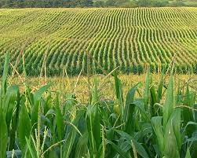
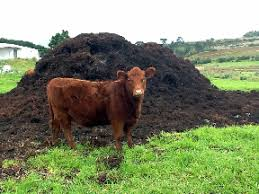
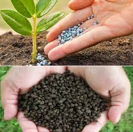

Types Of Organic Farming
Animal Husbandry

Organic animal husbandry means not only feeding organic food and avoiding synthetic food additives and synthetic medicines (e.g. antibiotics, growth hormones) but also focusing on satisfying the various needs of the farm animals. Good health and welfare of the animals are among the main objectives.
Organic animal husbandry is defined as a system of livestock production that promotes the use of organic and biodegradable inputs from the ecosystem in terms of animal nutrition, animal’s health, animal housing and breeding.It deliberately avoids use of synthetic inputs such as drugs, feed additives and genetically engineered breeding inputs.
Biological Management
Biological control – biological control in organic plant protection is a method of controlling insect pests and diseases using other organisms which rely on predation, parasitism and herbivory, or some other natural mechanisms with active farmer's management interaction. Natural enemies of plant insect pests and diseases are known as biological control agents. They include predators, parasitoids, and pathogens. A predator is an organism that eats another organism (animal, plant, fungi or dead organic matter) while parasitoids are most of their life attached to or within a host organism which they have a relationship. It is similar to parasitism but they ultimately sterilize, kill or sometimes consume their hosts.
Crop Rotation

- Crop rotation is the practice of planting different crops sequentially on the same plot of land to improve soil health, optimize nutrients in the soil, and combat pest and weed pressure.
- For example, say a farmer has planted a field of corn. When the corn harvest is finished, he might plant beans, since corn consumes a lot of nitrogen and beans return nitrogen to the soil.
- A simple rotation might involve two or three crops, and complex rotations might incorporate a dozen or more.
Grean Leaf Manures

Using green manure is among the environment protection trends that help the agricultural industry to shift towards sustainability through preserving resources and satisfying food demand. Seeking ways of switching to effective and environmentally friendly production, modern farmers face a number of issues. One of those is to maintain soil fertility while using fewer chemicals. The solution to this problem would be to consider green manure crops.
Farmers discovered a favorable impact of this technique on soil back in ancient times. Now, green manure is irreplaceable for those growers who want to minimize the use of harmful chemicals for soil fertilization.
Vermi Compost

Vermicompost (vermi-compost) is the product of the decomposition process using various species of worms, usually red wigglers, white worms, and other earthworms, to create a mixture of decomposing vegetable or food waste, bedding materials, and vermicast. This process is called vermicomposting, while the rearing of worms for this purpose is called vermiculture. Vermicast (also called worm castings,[a] worm humus, worm manure, or worm faeces) is the end-product of the breakdown of organic matter by earthworms.[1] These excreta have been shown to contain reduced levels of contaminants and a higher saturation of nutrients than the organic materials before vermicomposting.[2] Vermicompost contains water-soluble nutrients and is an excellent, nutrient-rich organic fertilizer and soil conditioner.[3] It is used in gardening and sustainable, organic farming.
Manures
Manure is organic matter that is used as organic fertilizer in agriculture. Most manure consists of animal feces; other sources include compost and green manure. Manures contribute to the fertility of soil by adding organic matter and nutrients, such as nitrogen, that are utilised by bacteria, fungi and other organisms in the soil. Higher organisms then feed on the fungi and bacteria in a chain of life that comprises the soil food web.
Biofertilizers
Bio-fertilizers in agricultural output are very important, particularly in the current environment of soaring agricultural commodity costs. For biological fertilizer production, economic purposes, and substantial outcomes, a selected strain of microorganisms should be utilized. Through the process of biological nitrogen fixation, these bio-fertilizers increase crop yields and soil health when applied to seeds, seedlings, plants, or soil. To avoid soil erosion, they produce capsular polysaccharides. They also break down immobilized compounds into soluble versions that plants can use. In comparison to chemical fertilizers, bio-fertilizers are more helpful.